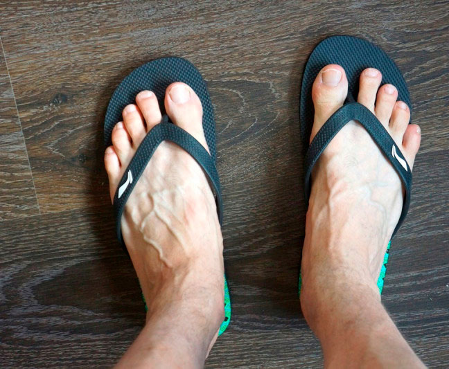
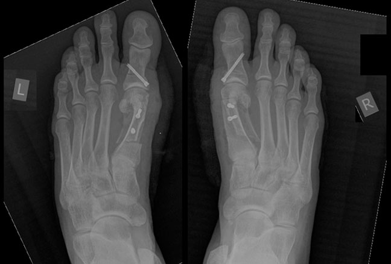
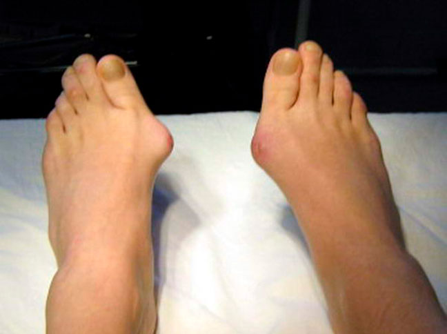
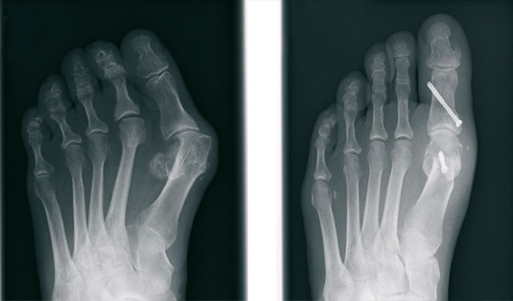
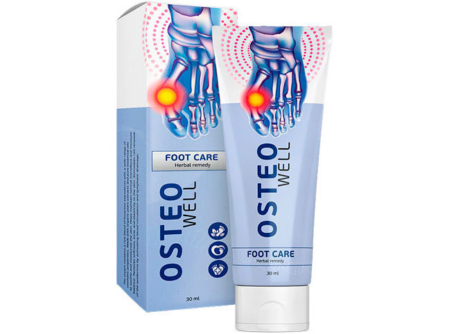
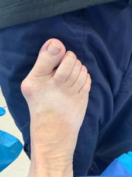
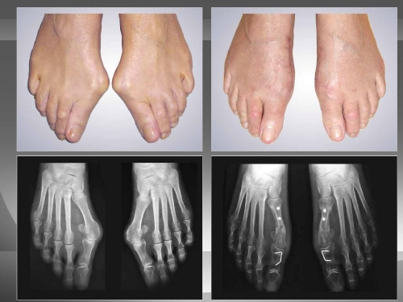
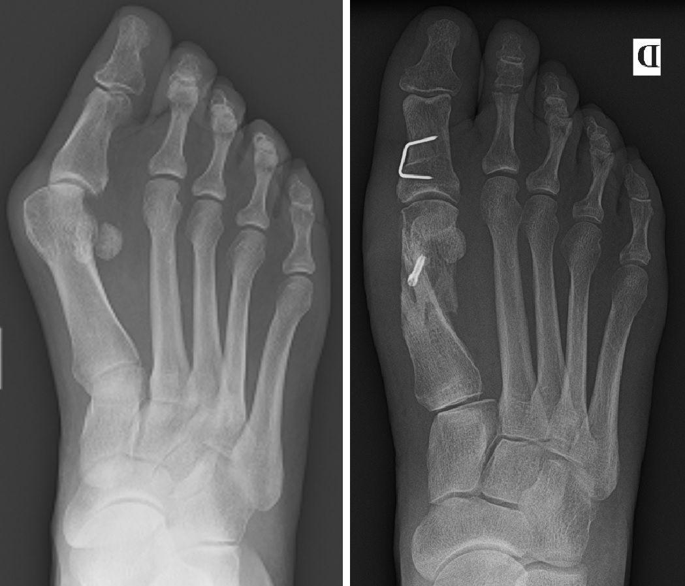

Привет! Меня зовут Марк. Еще несколько месяцев назад я страдал от наследственного вальгуса. Расскажу наши с дядей истории. Предупреждаю, у меня будет хэппи-энд и здоровые ноги, а у дяди нет. Но об этом чуть позже.
 Мои здоровые ноги сейчас
Я не хотел повторять судьбу дяди
Мой дядя Филипп маялся от вальгуса еще с 30 лет. Помню, как дядя приходил к нам в гости, а на ногах у него были ярко-малиновые шишки размером с черри. Филипп часто жаловался, что сил больше нет терпеть боль. Говорил, что ему сложно подобрать обувь, а даже если и подбирал, то его шишки натирались до крови.
Что он только не пробовал:ходил на массажи для стоп, ложился под капельницы, принимал таблетки, пил настои из трав, мазал шишки отварами и мазями – всё было безуспешно.
Дядя решился на операцию. После операции он не мог ходить три месяца:врачи запретили из-за возможного расхождения швов. Ноги опухли, постоянно кровоточили и выглядели больными. Когда швы заросли, то оказалось, что операция по удалению шишек деформирует стопы. Теперь мой дядя инвалид:кости на ступнях ушли внутрь, образовав полукруг на внешней стороны ступни. Он не может ходить без трости.
 Снимок ног дяди после операции
Вальгус можно лечить, а не резать
Тем временем мои шишки на ногах дали о себе знать. Я видел мучения дяди и боялся, что повторю его участь. Начал экстренно искать выход из этой ситуации, советовался с врачами, искал препараты и пытался найти средство, которое может спасти меня от инвалидности.
Однажды я был в гостях у своего друга-хирурга. Он учится в медицинской школе Гарварда и приехал домой на месяц. Питер заметил, что мои шишки на ногах бугрятся под носками и стал расспрашивать меня о самочувствии. Я рассказал ему, что часто мучаюсь от болей в ногах и плохо сплю из-за судорог. Еще я вспомнил о болезни дяди Фреда и предположил, что вальгус у меня наследственный и почти неизлечимый. Питер нахмурился, попросил подождать, вышел из комнаты и с кем-то долго говорил по телефону. Когда он вернулся, то сказал, что на следующей неделе придет посылка из США с лекарством для ног. Osteowell буквально за курс сможет облегчить боль, а еще через несколько курсов вылечит вальгус без операции.
 Мои ноги до лечения
Osteowell разрабатывался в США для военных. В прошлом году в штатах умерло 36 солдат, страдающих вальгусом. Во время марш-броска они натерли пораженную часть ног и получили заражение крови, которое стало смертельным. Власти немедленно начали разработку действенного средства от вальгуса и привлек к исследованиям медицинскую школу Гарварда. Питер участвовал в разработке Osteowell. Оказалось, что все 1500 исследуемых были излечены от вальгуса. Крем эффективен, так как проникает внутрь кожи и действует на поврежденную кость, заживляя ее. При этом, Osteowell устраняет боль, чувство дискомфорта и “горячих” пальцев.
 До и после лечения Osteowell
Я здоров! Бедный дядя...
Посылка пришла и я начал мазать Osteowell на шишки ног. Питер говорил, что у этого крема есть все медицинские сертификаты, исследования доказаны и опубликованы, а сам крем уже начал выпускаться в аптеках США. Мне не было страшно. Единственное, чего я боялся – лечь на операцию. Спустя пару дней, я заметил, что судороги по ночам прекращаются и тяжесть в ногах уходит. Еще через неделю понял, что шишки на ногах уменьшились. Спустя месяц я показался врачу. Он сказал, что я полностью здоров!
К сожалению, у дяди Филиппа инвалидность из-за последствий операции и ему предстоят долгие и болезненные массажи, капельницы и трость. Я надеюсь, что спустя год или два он сможет ходить как раньше. Если бы я только раньше знал об Osteowell!

Недавно мне написал Питер и сказал, что Osteowell начал выпускаться в Европе. Так как у производителя это первая партия, то она продается с большой скидкой и через официальный сайт. Я советую вам не ложиться на операцию, а лечить вальгус. Тем более, для этого есть проверенное средство.
2511 914
710 10984
 Print
Print
Кто уже пробовал? Расскажите помогает? Решил заказать жене, посмотрите, в ее случае это поможет?
Я заказала недавно, завтра пойду забирать. Мама заказывала, осталась довольна. Говорит, что жене вашей поможет, у нее всё хуже было. За пару недель косточка перестала так сильно выпирать и болеть
Забрала заказ неделю назад, теперь пользуюсь, и жалею только о том, что раньше об этом способе не знала. В общем советую всем, у кого такая же проблема!
Я балерина, у меня недавно врачи диагностировали вальгус. У нас вальгус – это частая история. Кстати, именно из-за него у нас почти все балерины получают инвалидность. Если для кого-то шишечки приносят только эстетический дискомфорт, для меня они значили окончание карьеры. На Osteowell наткнулась случайно – у своей коллеги увидела. Спросила, что это, она все о нем рассказала. Дала попробовать. Таких результатов я, если честно, не ожидала, думала на операцию ложиться. Слава богу, что сейчас все в порядке!
Я не представлял, что Osteowell может настолько хорошо сработать… Заказывал с недоверием, а он вон как помог!
Заказал. Все нравится. Пишите, расскажу подробнее
А я с первого дня разницу заметила. Устаешь меньше, а потом вообще забываешь, что у тебя шишка на ноге есть. А Osteowell в это время делает свое дело.
Тоже делал операцию 5 лет назад. Первое время вроде бы ничего, а потом снова все началось. Суставы болят, косточка растет, ходить не могу. В интернете всякое вранье пишут про операции. Не помогают они и точка. Нужно по-другому лечить вальгус. Думал, инвалидом стану после операции, но меня спас Osteowell
Я официантка, все время на ногах. В кафе нужно носить каблуки, у кафе такая политика. Работаю я каждый день с 7:00 до 18:00. Такая нагрузка на ноги дает о себе знать. Появилась косточка, начали болеть стопы. Заказала Osteowell. Пока не попробовала, думала, что придется уйти с работы. А ведь мне за учебу платить в универе. В общем, Osteowell мне помог стать здоровой и доучиться в университете
Сходил недавно к врачам – ура, я полностью здоров!!